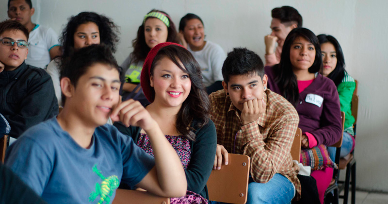

TSU en Administración área Capital Humano*
TSU en Contaduría
TSU en Desarrollo de Negocios área Mercadotecnia*
TSU en Gastronomía*
TSU en Mantenimiento área Instalaciones*
TSU en Mantenimiento área Naval*
TSU en Tecnologías de la Información
TSU en Turismo
TSU en Terapia Física*
Técnico Superior Universitario
Áreas:
-Desarrollo de Software Multiplataforma
-Infraestructura de Redes Digitales
Áreas:
-Hotelería*
-Desarrollo de Productos Alternativos*